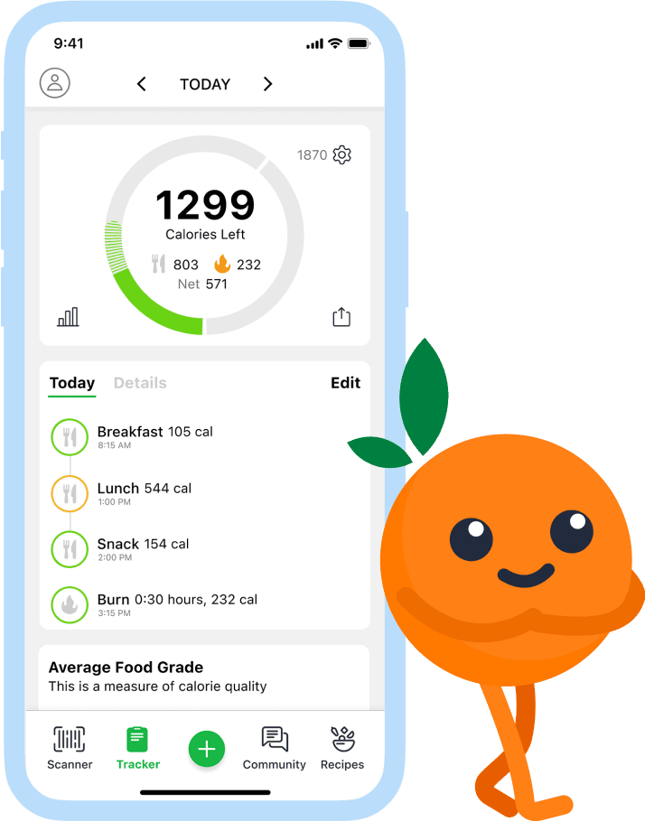

Product & Marketing Lead
Growing a Health Community
Fooducate helps people eat better. People downloaded it to track their food, then quietly drifted away. Food scores and calorie counts were table stakes, and going head to head with the biggest trackers on those was a fight Fooducate couldn't win. Community was a fight it could. I made that community the reason people stayed.

What I Did
Found Why People Left
User research showed that tracking alone wasn't enough: once the novelty wore off, there was no reason to come back. But one thing lit people up: doing it together, through social challenges.
Chose Where to Win
Instead of competing on calorie counts, I made community the heart of the experience, the one thing the biggest trackers couldn't match.
Launched Social Challenges
Shared challenges gave people a goal, a group and a reason to check in every day.
Filled Every Feed From Day One
New members no longer arrived to an empty screen. Their feed was preloaded with people like them, so they felt part of something from their first visit.
Spotlighted Members
I put members' own stories and recipes front and center. Their progress was more convincing than anything I could write, and it gave everyone something to try and share. "It keeps me accountable and aware!" one member wrote.
Results
Revenue
Daily users
App rating